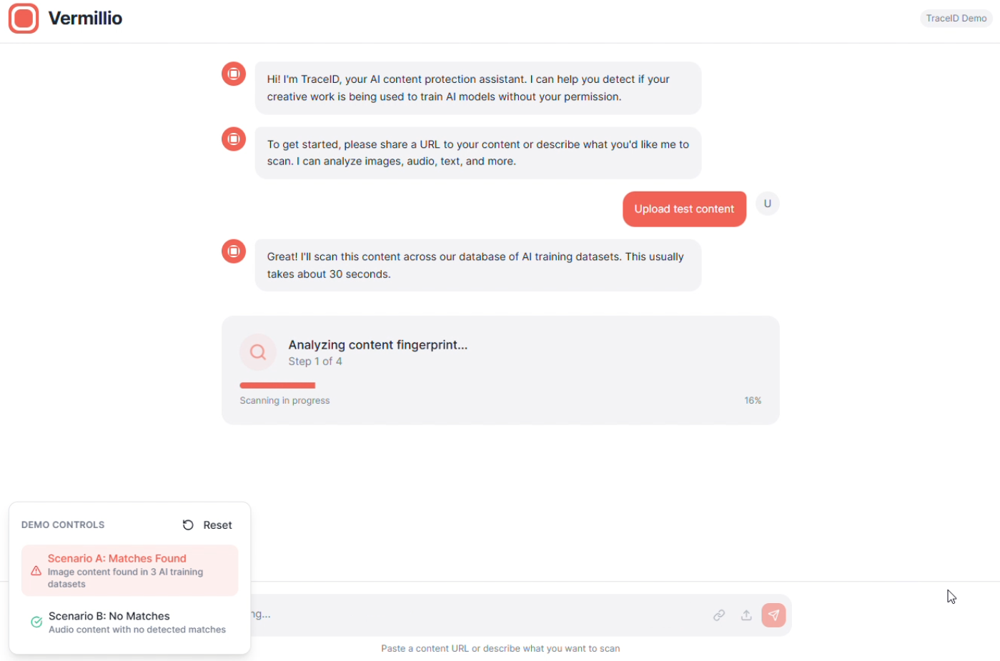
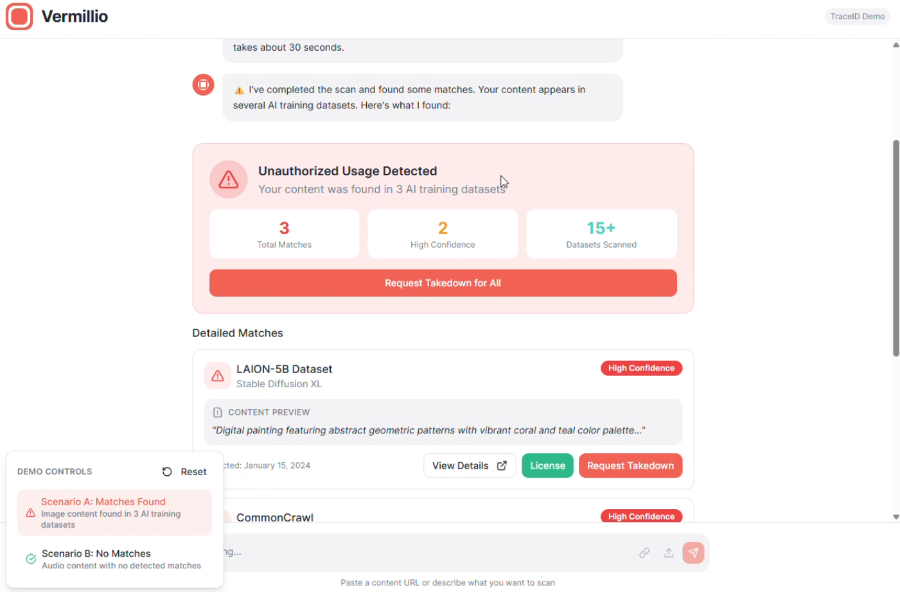

Vermillio ChatGPT App
Product brief for a ChatGPT integration that turns high-intent creator protection queries into a discovery and conversion channel.
Status: Concept / Early Exploration
Core Insight
Artists frequently ask ChatGPT questions like "How do I protect my art from AI?" That's a high-intent signal. 800M+ weekly active users, and some meaningful percentage of them are creators worried about unauthorized AI use of their work.
Vermillio solves this problem (detection, takedowns, licensing). But creators need to find Vermillio first. A ChatGPT app integration creates a natural discovery channel: show immediate value (scan results), then convert to Vermillio's protection and licensing products.
Dual Value Proposition
Protection Path
"Stop them from using my work"
Takedowns, monitoring
Licensing Path
"Let me profit from AI using my art"
Smart contracts, revenue share
The framing: AI isn't just a threat. It's a revenue stream if you set it up right. Both paths lead to the same app experience but with different emphasis.
Core Flows
Flow 1: Portfolio/Name Scan
User: "Is my work being used by AI?"
ChatGPT: "What's your name and portfolio link?"
User provides info
Vermillio scans (name/likeness matching)
Results: "We found X potential uses across AI platforms"
CTAs: [View Details] [Send Takedowns] [Set Up Licensing]
Flow 2: Specific File Upload
User: "Is anyone using this image?" + uploads file
Vermillio scans (fingerprint/hash matching)
Results: "This image appears in 2 AI training datasets"
CTAs: [Send Takedowns] [Register for Licensing]
Flow 3: Licensing Registration
User: "I want to license my art to AI companies"
Upload file, confirm ownership, set terms
Vermillio registers via smart contract
"Done. You'll be notified when requests come in."
Key: This completes in chat. Matches the pattern of successful ChatGPT apps (DoorDash ordering, Expedia booking).
Prototype Screenshots

Scan flow: user uploads content, TraceID analyzes fingerprint across AI training datasets.

Results: unauthorized usage detected across datasets with detailed matches. Dual CTAs for takedown or licensing.
Content Ownership Verification
The critical risk: a bad actor uploads someone else's work and claims ownership. The recommended approach is a hybrid model:
- Scan: Allow immediately with self-attestation (show value fast)
- Takedowns: Require portfolio link or social verification before sending
- Licensing: Require identity verification (similar to payment platforms)
This preserves the "show value fast" moment while gating high-stakes actions behind appropriate verification.
Open Questions
- Scan latency: Can results return fast enough for synchronous chat? If scans take minutes, the in-chat magic breaks.
- Creator audience size: What percentage of ChatGPT's 800M WAU are creators in Vermillio's target segments?
- Economics: Does Vermillio's transaction fee model work at individual artist scale, or is this primarily a top-of-funnel for enterprise?
- False positive rate: Showing "violations" that aren't real damages trust and could lead to improper takedowns.
What This Demonstrates
- Distribution thinking: Identified an untapped acquisition channel where intent already exists
- Product sense: Designed flows that show value before asking for commitment
- Risk awareness: Content ownership verification design, false positive management, platform dependency
- Technical grounding: MCP server tools, API integration points, widget concepts